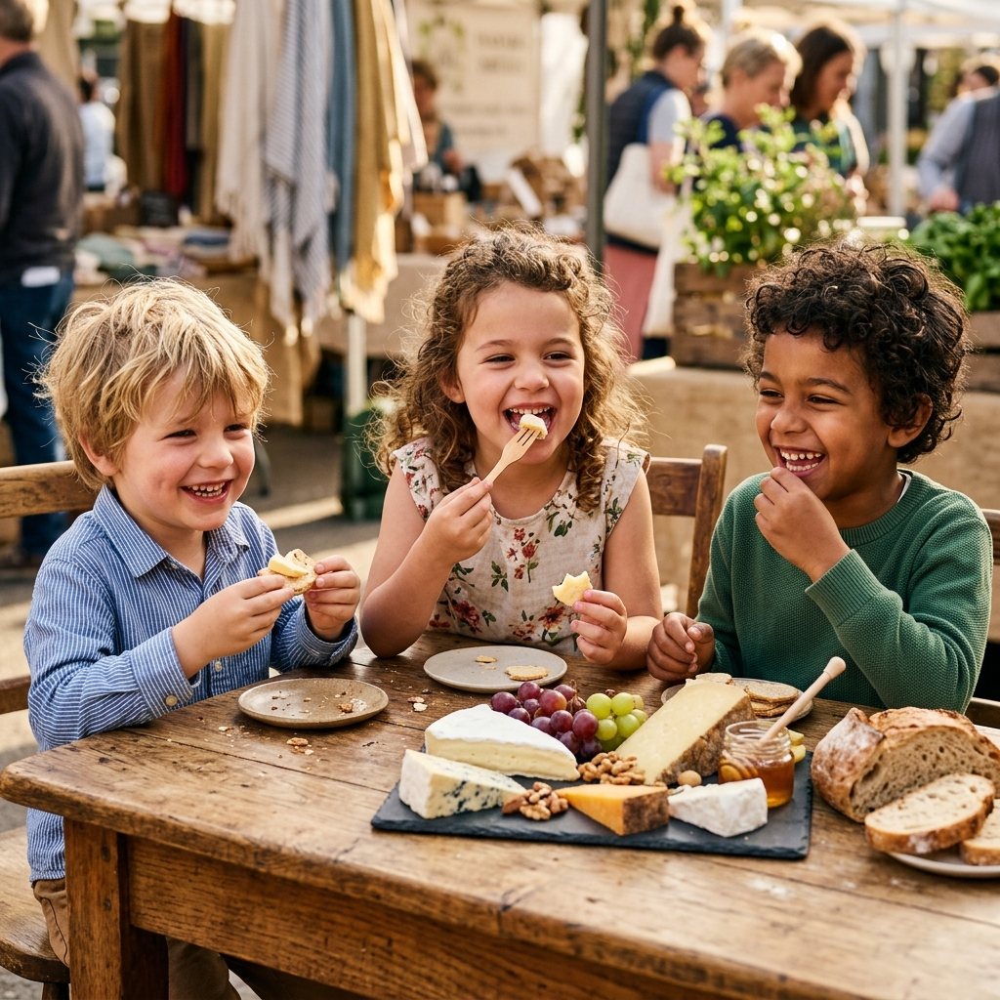

Sommelier Pairing Masterclass: Aged Vintage Comté & Subterranean Vin Jaune
Unlocking the nutty, caramelized notes of 24-month AOP Comté alongside oxidative Jura wines for an unforgettable tasting experience.
Stories of subterranean cave aging, sommelier pairing guides, 14th-century Alpine heritage, and gourmet entertaining for true cheese connoisseurs and families alike.

Deep dive into subterranean cave aging science, sommelier wine & cheese pairing secrets, 14th-century Alpine heritage, and gourmet gastronomy.

Deep within 80-foot limestone caverns, temperature and humidity remain in flawless equilibrium. Discover how our master affineurs nurture crystalline tyrosine clusters and velvety natural rinds over 36 months of patient cellar maturation.
Unlocking the nutty, caramelized notes of 24-month AOP Comté alongside oxidative Jura wines for an unforgettable tasting experience.

Journey high into the Swiss pre-Alps where artisan families still hand-stir copper cauldrons over open wood fires to craft legendary Gruyère D'Alpage.

Step-by-step guidance on balancing texture, acidity, and intensity with black truffle brie, honeycomb, marcona almonds, and cured prosciutto.

Demystifying Brevibacterium linens, Penicillium camemberti, and how brine washings develop pungent aromas and golden orange hues.
How to structure temperature progression from mild chèvre to intense blue reserves, complete with sommelier tasting notes and custom scorecards.

Unveiling the historic natural airflow fault lines of Roquefort-sur-Soulzon that create Penicillium roqueforti veins in sheep's milk wheels.